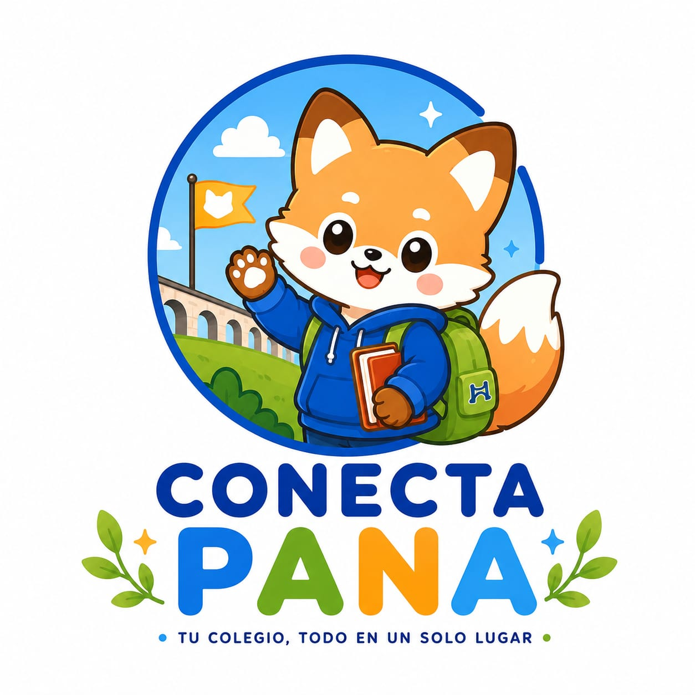
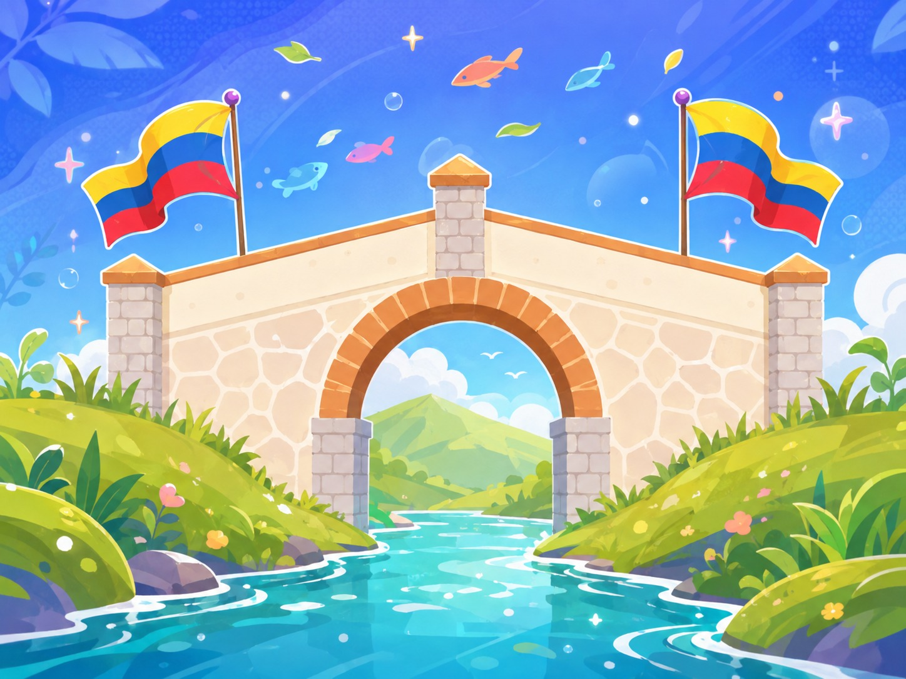
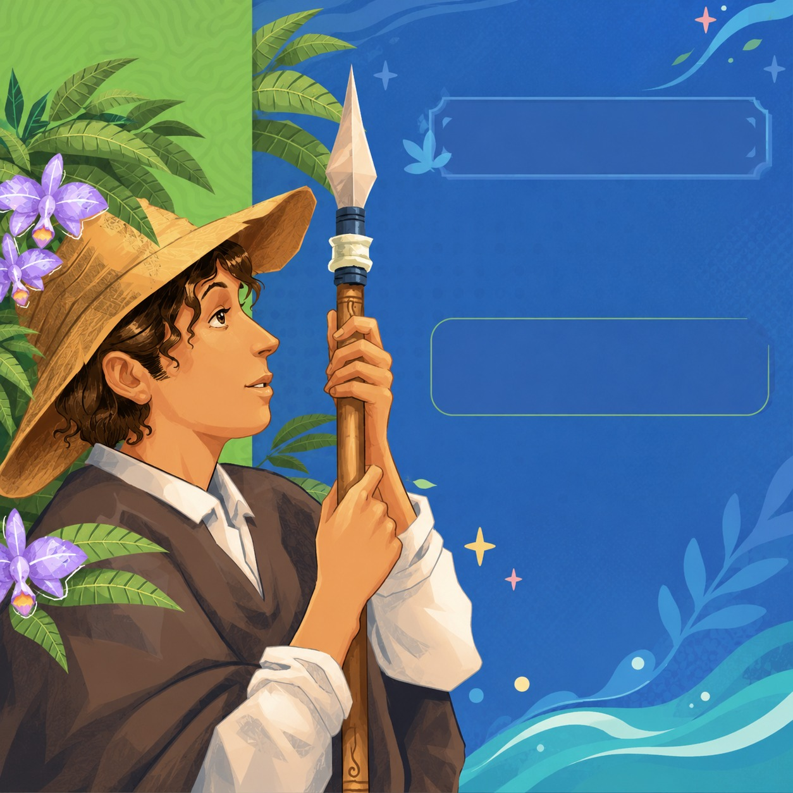
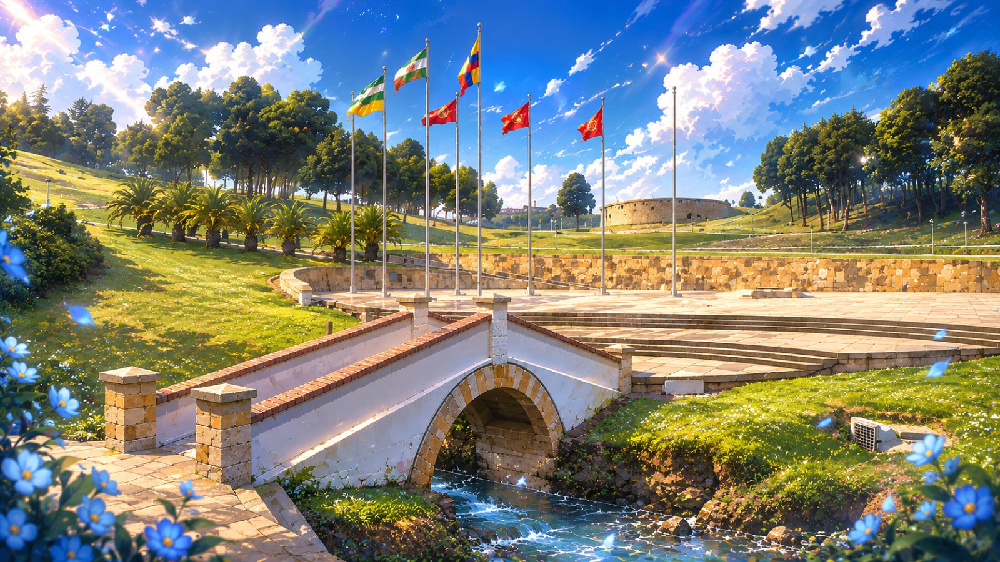

Conecta PanaLa plataforma web que conecta a la institución educativa Panamericano Puente de Boyacá con toda nuestra comunidad.

Conoce las normas, derechos, deberes y acuerdos que hacen parte de nuestra comunidad educativa. Consulta fácilmente la información necesaria para convivir y participar de manera responsable.
Consultar manual
Mantente informado sobre todo lo que ocurre en la I.E. Panamericano Puente de Boyacá. Conoce las noticias, anuncios, actividades y acontecimientos más importantes de nuestra institución.
Ver noticias
Un espacio para conocer las actividades, proyectos, eventos y logros de nuestros estudiantes. Participa, comparte y sé parte activa de la comunidad educativa.
Conocer más